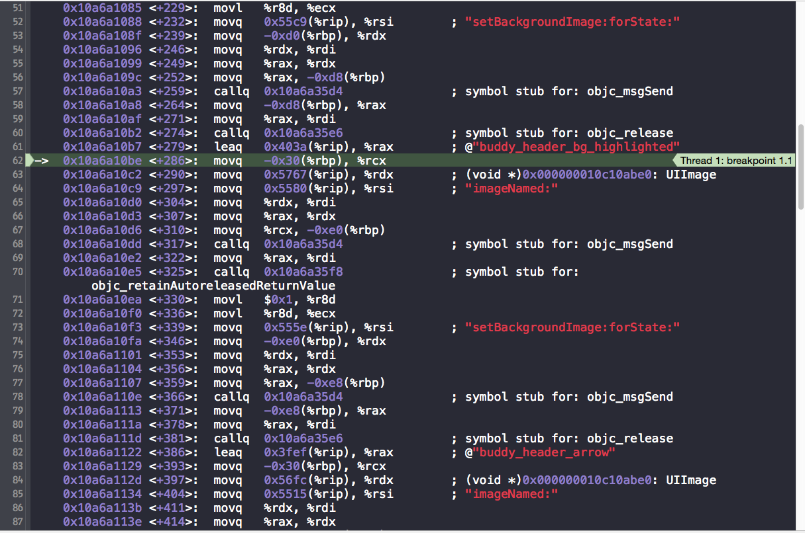
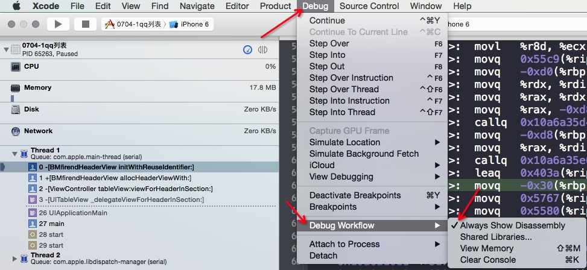
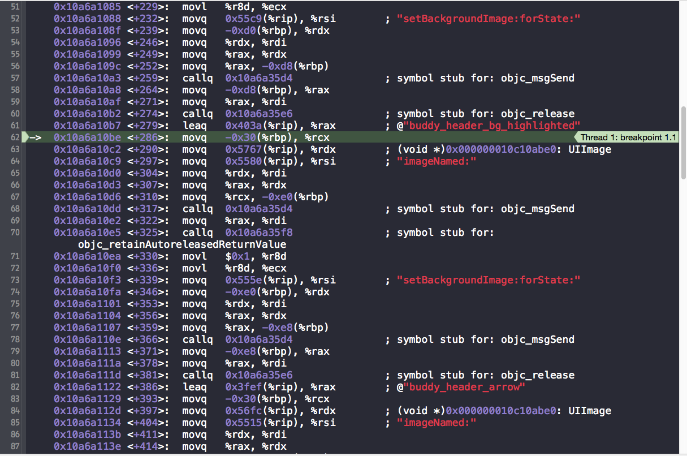
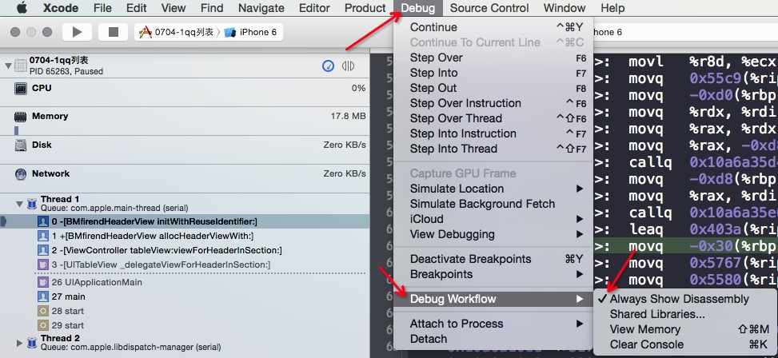

Xcode调试断点Debug不显示源代码区
当我们在开发Xcode程序的时候,旺旺要用到Xcode调试,有时可能无意修改了某个配置信息,导致在调试的时候不能追踪到具体的代码区域.
问题:在打断点的时候,一直在Disassembly里面跳,不能显示源代码.问了好多人都没解决.

下面给出解决办法,其实很简单:

取消Always Show Disassembly即可.
当我们在开发Xcode程序的时候,旺旺要用到Xcode调试,有时可能无意修改了某个配置信息,导致在调试的时候不能追踪到具体的代码区域.
问题:在打断点的时候,一直在Disassembly里面跳,不能显示源代码.问了好多人都没解决.

下面给出解决办法,其实很简单:

取消Always Show Disassembly即可.